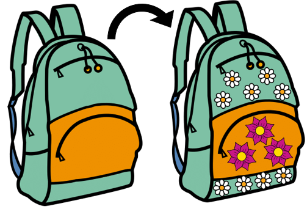
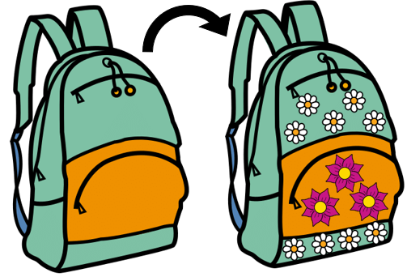
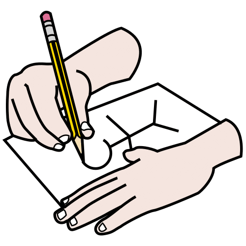

Diccionario
Personalizar
 Definición:
Adaptar una cosa o sus características al gusto o a las necesidades de una persona.
Ejemplo:
Esta mochila la puedes personalizar. Eliges el color y sus imágenes.
 Definición:
Adaptar una cosa o sus características al gusto o a las necesidades de una persona.
Ejemplo:
Esta mochila la puedes personalizar. Eliges el color y sus imágenes.

¡Fantástico! Si has llegado hasta aquí, es que ya eres el rey o la reina de los diarios. Eres capaz de escribir tus anécdotas y aventuras expresando lo que sientes, tus emociones, tus reflexiones… Enhorabuena, has hecho que parte de de tus recuerdos perduren en el tiempo.
Pero...no sólo has aprendido a escribir tu propio diario, sino que además, has logrado ponerte en la piel de un personaje y escribir su diario como si fueras él o ella, que es aún más difícil.
Por si algún día tienes alguna duda o te falla la memoria, aquí tienes un cartel para que no se te olvide nada de lo que has aprendido.
Accede a la infografía sobre lo que has aprendido. Se abre en otra ventana.

Tú eres un experto en diarios.
Tú escribes anécdotas y aventuras.
Tú expresas emociones y sentimientos.
Tú haces reflexiones.
Tú escribes reflexiones.
Tú escribes recuerdos.
Tú guardas recuerdos.
Tú recuerdas recuerdos.
Tú creas personajes inventados.
Tú creas diarios inventados.
Tu tienes aquí un cartel.
Tú puedes ver el cartel.
El cartel tiene tus aprendizajes.
El cartel te ayudará a ti.
Tú recuerdas con el cartel.
Accede a la infografía sobre lo que has aprendido. Se abre en otra ventana.
Durante estos días has descubierto lo que es un diario personal y lo útil que es. Podríamos hacer una lista enorme con sus beneficios. Algunos ya los conoces pero prefiero que el resto los descubras tú mismo.
Te animo a que crees y utilices tu propio diario personal. Cualquier libreta o cuaderno que tengas en casa te servirá. Lo importante es que lo utilices a menudo.
Prueba a escribir el diario durante un par de semanas. Ya verás como no puedes dejar de escribirlo.
El diario personal es útil.
Tú escribes tu diario.
Tú aprendes con el diario.
Tú mejoras con el diario.
Tú escribes tu diario en casa.
Tú aprendes en casa.
Tú mejoras en casa.
¿Sabes que, además de todo lo que has aprendido, los diarios se pueden personalizar aún más? Vamos a mostrar algunos ejemplos.
¿Te gusta?
Si quieres seguir escribiendo diarios de una forma más artística, puedes buscar información sobre el lettering, el visual thinking o los doodles.
Si tienes dudas sobre dónde y cómo buscar la información puedes consultar la siguiente guía.
Accede a la técnica Dónde y cómo buscar la información. Se abre en una ventana nueva.
Es el arte de dibujar letras a mano de forma creativa.

Es una forma de expresar tus ideas y pensamientos de forma gráfica, con dibujos sencillos.
Se llama así a los dibujos que hace una persona cuando su atención está ocupada en otra cosa. Dibujitos pequeños que pueden decorar las páginas de tu diario. Los puedes encontrar por ejemplo en el fondo de pantalla de whatsapp.
Definición:
Adaptar una cosa o sus características al gusto o a las necesidades de una persona.
Ejemplo:
Esta mochila la puedes personalizar. Eliges el color y sus imágenes.
¿Tú ya tienes tu diario?
¿Tú diario está en tu casa?
¡Enhorabuena!
Tú puedes personalizar tu diario.
Personalizar algo es hacerlo único.
Tú ves varios ejemplos.
Tú aprendes con los ejemplos.
¿Te han gustado?
Tú puedes tener un diario personalizado.
Tú puedes hacer un diario personalizado.
Tú diario será único.
Tú aprendes a personalizar.
Tú personalizas de varias maneras:
Lettering:
Tú personalizas con Lettering.
El Lettering es dibujar letras.
Las letras dibujadas son muy bonitas.
Hay muchas formas de dibujar letras.
Tú puedes aprender a dibujar letras.
Tú puedes ver algunos ejemplos.
Visual thinking:
Tú personalizas con Visual Thinking.
El Visual Thinking expresa ideas.
Las ideas se expresan con dibujos.
Los dibujos usados son sencillos.
Tú puedes ver algunos ejemplos.
Doodles.
Tú personalizas con Doodles
Los Doodles son pequeños dibujos.
Son dibujos muy simples.
Son dibujos muy bonitos.
Son dibujos parecidos a los garabatos.
Los garabatos son dibujos rápidos.
Los garabatos son fáciles.
Los Doodles decoran páginas de diario.
Tú puedes ver algunos ejemplos.
Tú puedes aprender más cosas buscando.
Puedes buscar información por internet.
Tú puedes aprender a buscar información.
Lee la siguiente guía para aprender cómo.
Accede a la técnica Dónde y cómo buscar la información. Se abre en una ventana nueva.
Definición:
Adaptar una cosa o sus características al gusto o a las necesidades de una persona.
Ejemplo:
Esta mochila la puedes personalizar. Eliges el color y sus imágenes.
 Definición:
Trazo o dibujo hecho sin cuidado y con rapidez.
Ejemplo:
Natalia ha dibujado el garabato de una persona en su folio.
Sábado, 20 de junio de 1942
Para alguien como yo es una sensación muy extraña escribir un diario. No solo porque nunca he escrito, sino porque me da la impresión de que más tarde ni a mí ni a ninguna otra persona le interesarán las confidencias de una colegiala de trece años. Pero eso en realidad da igual, tengo ganas de escribir y mucho más aún desahogarme y sacarme de una vez unas cuantas espinas.
Ana Frank
Hola a todos y todas.
Soy Ana de nuevo, no sé si me recordáis. Como ya os comenté, hace muchos, muchos años, escribí uno de los diarios más famosos del mundo. El fragmento que os he leído antes es el texto con el que lo empecé.
El 12 de junio de 1942 era mi cumpleaños y mi padre decidió regalarme un diario. He de deciros que, al principio, no me hizo ni chispa de gracia. Semanas después pasó algo inesperado. Mi país fue invadido por los nazis y mi familia y yo tuvimos que escondernos en la buhardilla de unos despachos en Amsterdam (Holanda) hasta 1944. Imaginaros dos años de encierro…
Entonces mi diario, al que llamé Kitty, se convirtió en mi mejor amigo. En él contaba todo, mis emociones, mi vida diaria en la buhardilla, mis confidencias…
Nunca pensé que mi diario, al publicarse pudiera ser uno de los libros más leídos, se vendieron más de treinta millones de ejemplares en todo el mundo. Actualmente forma parte del Patrimonio de la humanidad de la UNESCO.
Si queréis saber más sobre mi vida, solo tenéis que buscarme en Internet.
Os animo a escribir vuestro propio diario. Es una forma de expresar vuestros sentimientos e ideales con total libertad. Escribir nuestras emociones hace que reflexionemos y nos sintamos mejor. También nuestros recuerdos perduran en el tiempo. Son todo beneficios… ¿Sois capaces? ¡Ánimo!
Sábado, 20 de junio de 1942
Para alguien como yo es una sensación muy extraña escribir un diario. No solo porque nunca he escrito, sino porque me da la impresión de que más tarde ni a mí ni a ninguna otra persona le interesarán las confidencias de una colegiala de trece años. Pero eso en realidad da igual, tengo ganas de escribir y mucho más aún desahogarme y sacarme de una vez unas cuantas espinas.
Ana Frank
Hola a todos.
Soy Ana.
Tú ya me conoces.
Yo soy la niña del vídeo.
Tú viste el vídeo al principio.
Yo escribí un diario.
Yo escribí hace muchos años.
Tú has leído un diario.
Ese es mi diario.
Yo escribí ese fragmento.
Es mi primer fragmento.
Mi padre me regaló un diario.
Yo lo usé mucho.
Yo viví muchas aventuras.
Algunas aventuras eran buenas.
Otras aventuras eran muy malas.
Yo viví una guerra.
Yo estuve con mi familia escondida.
Yo me escondía de la guerra.
Yo estuve escondida dos años.
Yo escribí mucho.
Mi diario fue mi amigo.
Mi diario me ayudó.
Mi diario es famoso.
Mi diario se vende mucho.
Tú puedes buscarme.
Tú puedes aprender.
Tú buscas mi nombre.
Yo soy Ana Frank.
Tú buscas Ana Frank.
Tú me conoces.
Yo quiero que tú escribas.
Tú escribes tu diario.
El diario te ayudará mucho.
Para concluir, vas a recordar la estrategia o el “truco” que has aprendido durante este reto.
Estas estrategias o “trucos” te las enseñé y las trabajaste en los apartados “Un diario estructurado” y “Avistando un diario personal lleno de anécdotas”, ambos en la fase 4 ¿Recuerdas? Vuelve a estos apartados y repasa un momento en qué consistían. También es importante que recuerdes cómo te han ayudado a superar el reto que te propuse.
Tras hacer el repaso, ya estás preparado para terminar tu tarea. Ahora, abre el Diario de Aprendizaje y completa su última página.
En este apartado guardarás información valiosa sobre las estrategias, en qué actividades las has aplicado, si te han sido útiles y qué aspecto te ha resultado más difícil.
¡Sigue trabajando así! ¡Lo estás haciendo genial!
Por tu esfuerzo has conseguido aquí una insignia, que te acreditará como Mega-Aprendiz ¡Enhorabuena!
Recuerda:
Pregunta a tu profesor o profesora si rellenarás el diario en papel o en el ordenador.
Si lo rellenas en el ordenador, ¡no te olvides de guardarlo cuando lo termines!
Obra publicada con Licencia Creative Commons Reconocimiento No comercial Compartir igual 4.0
{kind=link}
{kind=link}